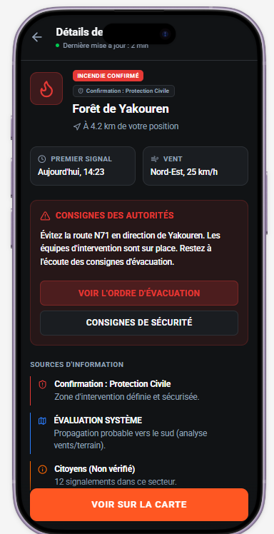
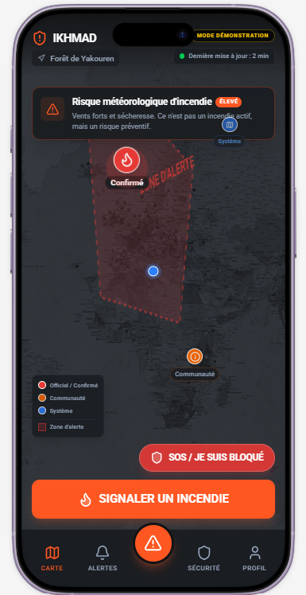
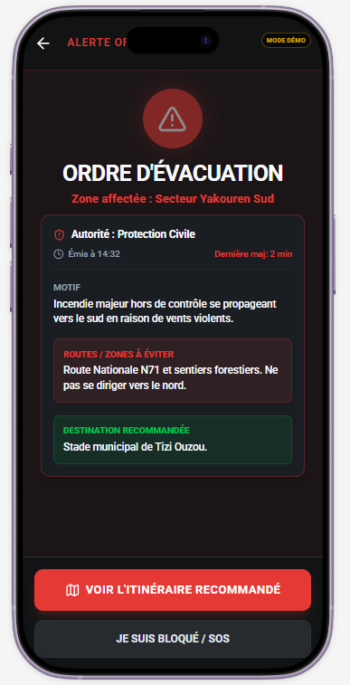
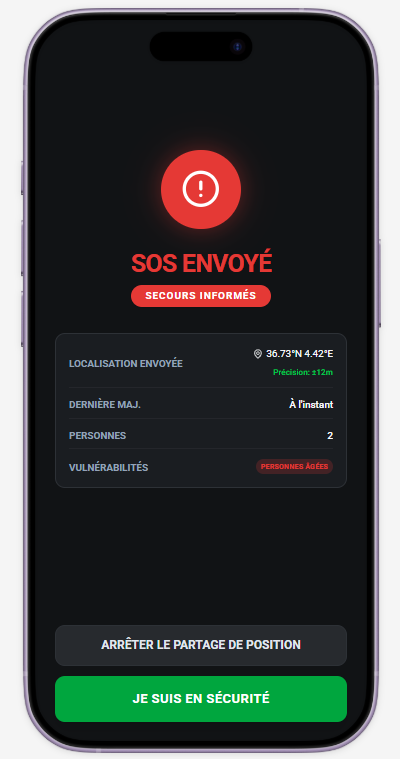
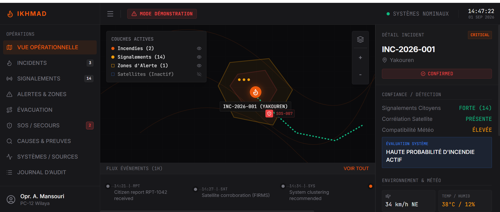
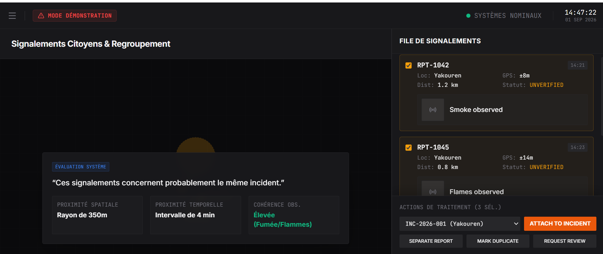
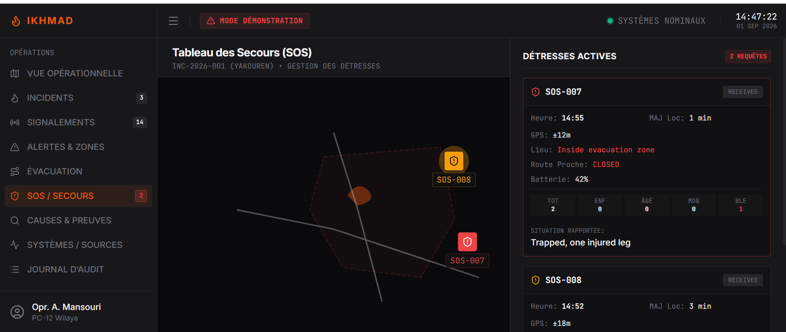

01
Report
Citizens and external sources contribute observations with location and context.
IKHMAD connects citizens and emergency operators through a shared wildfire operational picture — combining reporting, verification, alerts, SOS and evacuation decision support in one platform.


Citizens may see smoke before official confirmation. Operators receive observations from different channels. Road conditions can change while people are already moving. IKHMAD is designed to connect these pieces into one coordinated emergency workflow.
Citizens and external sources contribute observations with location and context.
Reports remain distinct from confirmed incidents and are reviewed by operators.
IKHMAD's planned intelligence layer supports multi-source risk assessment.
Citizens receive clear incident information and official safety instructions.
Future capability evaluates safer routes and destinations as conditions evolve.
The current prototype demonstrates the key citizen flows using synthetic and demonstration data.


Operators can review incoming citizen reports, correlate observations, inspect evidence, validate incidents and monitor active distress requests.



The long-term technical differentiation sits between raw emergency information and operational/user-facing decisions.
Correlation · confidence · hazard evaluation · decision support
The current version is a prototype under development and is not an operational emergency service.